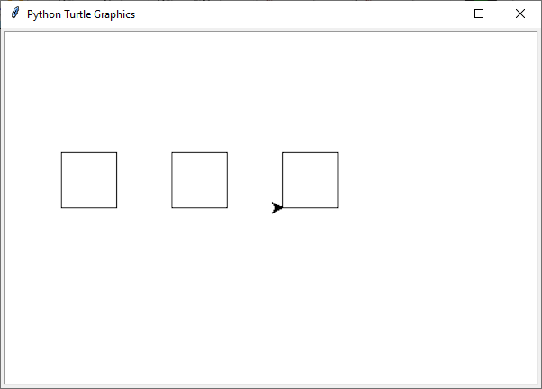
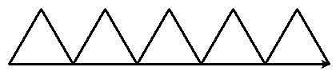
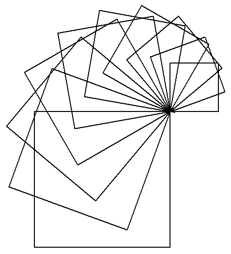
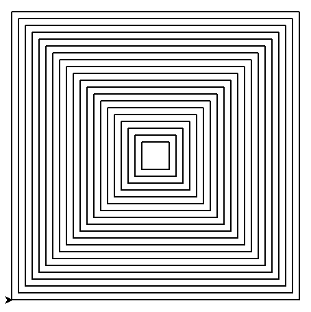

5. Functies#
In Python kun je een functie herkennen aan haakjes achter de naam. Bijvoorbeeld print() en turtle.penup() zijn functies. Aan sommige functies kun je informatie meegeven waarmee de functie iets moet doen. Die informatie zet je dan tussen de haakjes. Bijvoorbeeld print('Hello, World!') geeft aan dat de functie print() de tekst 'Hello, World!' moet afdrukken. Er zijn ook functies die geen informatie nodig hebben, zoals turtle.penup(), maar toch moet je de haakjes typen, omdat Python anders niet snapt dat je een functie aanroept.
Wat leer je in dit hoofdstuk
Hoe maak je je eigen functies in Python.
Wat is het verschil tussen een functiedefinitie en een functieaanroep.
Hoe maak je een functie die input kan ontvangen.
5.1. Het def keyword#
Om een functie te maken heb je het def keyword nodig. Keywords zijn woorden met een speciale betekenis in Python. Je kent bijvoorbeeld al de keywords while en for om loops te maken en je hebt in het hoofdstuk Variabelen een overzicht van de Python keywords gezien. Met het def keyword definieer je een functie.
Kopieer onderstaande code naar een nieuw bestand in Mu editor en sla het op als function_square.py.
1import turtle
2
3tony = turtle.Turtle()
4
5# Functie square() tekent een vierkant
6def square():
7 z = 0
8 while z < 4:
9 tony.fd(50)
10 tony.lt(90)
11 z = z + 1
Wanneer je function_square.py runt, zul je zien dat er niets gebeurt! Daar is een goede reden voor. In regel 6 wordt de functie square() gedefinieerd. Let op de dubbele punt : aan het einde van de regel. Net als bij de while loop moeten de coderegels die binnen de functie horen ingesprongen zijn. Python weet dat het deze regels pas moet uitvoeren wanneer de functie wordt aangeroepen. En dat is waarom er niets gebeurt: de functie is nog niet aangeroepen. Dat is snel op te lossen door een coderegel toe te voegen:
1import turtle
2
3tony = turtle.Turtle()
4
5# Functie square() tekent een vierkant
6def square():
7 z = 0
8 while z < 4:
9 tony.fd(50)
10 tony.lt(90)
11 z = z + 1
12
13# Hoofdprogramma
14square()
Het commentaar op regels 5 en 13 is voor Python niet interessant (Python negeert commentaar bij het uitvoeren van het programma), maar maakt de code wel beter leesbaar. Met # Hoofdprogramma in regel 13 geven we aan dat vanaf daar het eigenlijke programma begint. In regel 14 roepen we de functie square() aan, waardoor het vierkant daadwerkelijk wordt getekend. Probeer maar.
Het is belangrijk twee zaken goed te onderscheiden:
Een functiedefinitie is de code die de functie beschrijft. In de functiedefinitie staat wat de functie doet. De functie wordt nog niet uitgevoerd; dat gebeurt pas wanneer hij wordt aangeroepen.
In function_square.py bevatten de regels 6 t/m 11 de functiedefinitie.
De functieaanroep staat in het hoofdprogramma (of in de definitie van een andere functie). De functieaanroep zorgt ervoor dat de functie daadwerkelijk wordt uitgevoerd.
In function_square.py staat op regel 14 de functieaanroep. Merk op dat op regels 9 en 10 ook functieaanroepen staan: tony.fd(50) en tony.lt(90).
Elke keer dat we nu een vierkantje met zijden van 50 pixels willen tekenen, hoeven we slechts de functie square() aan te roepen. Dat scheelt een hoop typwerk. Wijzig de code in function_square.py als volgt:
1import turtle
2
3tony = turtle.Turtle()
4
5# Functie square() tekent een vierkant
6def square():
7 z = 0
8 while z < 4:
9 tony.fd(50)
10 tony.lt(90)
11 z = z + 1
12
13# Hoofdprogramma
14tony.pu()
15tony.goto(-200, 0)
16tony.pd()
17square()
18tony.pu()
19tony.goto(-100, 0)
20tony.pd()
21square()
22tony.pu()
23tony.goto(0, 0)
24tony.pd()
25square()
Dit programma tekent drie vierkantjes:

Uiteraard kunnen we dit efficiënter doen met een loop. Probeer de code hieronder maar eens, die tien vierkantjes tekent.
1import turtle
2
3tony = turtle.Turtle()
4
5# Functie square() tekent een vierkant
6def square():
7 z = 0
8 while z < 4:
9 tony.fd(50)
10 tony.lt(90)
11 z = z + 1
12
13# Hoofdprogramma
14tony.pu()
15tony.goto(-375, 0)
16tony.pd()
17vierkant = 0
18while vierkant < 10:
19 square()
20 tony.pu()
21 tony.fd(75)
22 tony.pd()
23 vierkant = vierkant + 1
Opdracht 01
Maak een nieuw bestand in Mu editor met de naam function_triangle.py. Schrijf een functie triangle() die een driehoekje tekent met zijden van 80 pixels en hoeken van 60°. Gebruik de onderstaande structuur.
Roep de functie triangle() in het hoofdprogramma aan om de driehoek te tekenen.
import turtle
tony = turtle.Turtle()
# Functie triangle() tekent een gelijkzijdige driehoek
...
# Hoofdprogramma
...
Hint
Om een driehoek met hoeken van 60° te maken, moet je de turtle telkens 120° laten draaien.
Opdracht 02
Wijzig de code in function_triangle.py uit opdracht 01 zodat niet één driehoek wordt getekend, maar vijf driehoeken op een rij, zoals in onderstaande figuur. Hiervoor heb je slechts 5 regels code nodig in je hoofdprogramma.

5.2. Argumenten en parameters#
Aan de functie square() kun je geen informatie tussen de haakjes meegeven. Maar zou het niet handig zijn als we square(100) konden gebruiken om een vierkant met zijden van 100 pixels te tekenen en square(200) voor zijden van 200 pixels? Ja dat zou heel handig zijn! We willen dus graag informatie kunnen meegeven aan onze functies. In Python noem je die informatie argumenten. Om argumenten mee te kunnen geven aan een functie, voeg je aan de functiedefinitie parameters toe. Het volgende voorbeeld maakt het verschil tussen argumenten en parameters duidelijk.
1# Functie begroet()
2def begroet(naam): # naam is een parameter
3 print(f'Hallo {naam}!')
4
5# Hoofdprogramma
6begroet('Alan') # 'Alan' is een argument
Bij het aanroepen van de functie begroet() in regel 6 geven we het argument 'Alan' mee. Dit argument wordt door de functie ontvangen in de parameter naam. De functie begroet() zal dan de tekst 'Hallo Alan!' afdrukken.
Een parameter is een variabele die tussen de haakjes in een functiedefinitie staat. In het voorbeeld hieronder zijn a en b parameters.
def print_som(a, b):
uitkomst = a + b
print(f'{a} + {b} = {uitkomst}')
Een argument is een waarde die je tussen haakjes meegeeft in een functieaanroep. In het voorbeeld hieronder zijn 3 en 4 argumenten.
print_som(3, 4)
Terug naar onze turtle functies. We gaan de functie square() aanpassen zodat het mogelijk wordt om één argument mee te geven: de zijdelengte. Maak weer een nieuw bestand in Mu editor en noem het turtle_functions.py. In dit bestand zullen we namelijk meerdere verschillende functies gaan definiëren. Kopieer onderstaande code naar het bestand.
1import turtle
2
3tony = turtle.Turtle()
4
5# Functie square() tekent een vierkant
6def square(side_length):
7 for i in range(4):
8 tony.fd(side_length)
9 tony.lt(90)
10
11# Hoofdprogramma
12square(200)
Deze code lijkt sterk op function_square.py. Op regel zes is tussen de haakjes echter de parameter side_length toegevoegd. Deze parameter wordt in regel 8 gebruikt in de aanroep tony.fd(side_length). Door deze eenvoudige toevoegingen kunnen we nu in regel 12 een argument meegeven aan de functie: square(200).
Overigens is er nog een verschil met function_square.py: in plaats van een while loop gebruiken we een for loop. Dit is efficiënter en levert minder typwerk op.
Nu we een argument aan square() kunnen meegeven, hebben we nog meer mogelijkheden om te spelen met loops. Gebruik bijvoorbeeld de loopvariabele als volgt:
1import turtle
2
3tony = turtle.Turtle()
4
5# Functie square() tekent een vierkant
6def square(side_length):
7 for i in range(4):
8 tony.fd(side_length)
9 tony.lt(90)
10
11# Hoofdprogramma
12for i in range(10):
13 square(100 + 20 * i)
14 tony.lt(20)
De for loop zorgt er nu voor dat 10 vierkanten worden getekend. De eerste met zijden van 100 + 20 * 0 = 100 pixels, de tweede met zijden van 100 + 20 * 1 = 120 pixels, de derde met zijden van 100 + 20 * 2 = 140 pixels, enzovoort. En tussen elk vierkant draait de turtle 20 graden. Het resultaat is een mooie spiraal van vierkanten.

Opdracht 03
Voeg aan turtle_functions.py de functie triangle(side_length) toe, die een driehoekje tekent met zijden met lengte side_length en hoeken van 60°. Plaats deze functie onder de square(side_length) functie, maar boven het hoofdprogramma. Vervang vervolgens in het hoofdprogramma de aanroep van square() door een aanroep van triangle(). De structuur ziet er dus zo uit:
import turtle
tony = turtle.Turtle()
# Functie square() tekent een vierkant
def square(side_length):
...
# Functie triangle() tekent een driehoek
def triangle(side_length):
...
# Hoofdprogramma
for i in range(10):
triangle(100 + 20 * i)
tony.lt(20)
Opdracht 04
Voeg aan turtle_functions.py de functie teleport(x, y) toe, die de turtle verplaatst naar het punt met coördinaten (x, y) zonder een lijn te tekenen. De functie bestaat uit drie regels code:
Een instructie om de pen van het papier te halen.
Een verplaatsing naar het punt (x, y).
Een instructie om de pen weer op het papier te zetten.
Plaats je functie weer boven het hoofdprogramma. Test vervolgens de functie met het volgende hoofdprogramma:
...
# Hoofdprogramma
for i in range(20):
teleport(-10 * i, -10 * i)
square(40 + 20 * i)
Resultaat
Je code zou in de volgende tekening moeten resulteren:

Oplossing
1import turtle
2
3tony = turtle.Turtle()
4
5# Functie square() tekent een vierkant
6def square(side_length):
7 for i in range(4):
8 tony.fd(side_length)
9 tony.lt(90)
10
11# Functie triangle() tekent een vierkant
12def triangle(side_length):
13 for i in range(3):
14 tony.fd(side_length)
15 tony.lt(120)
16
17# Functie teleport() verplaatst de turtle zonder te tekenen
18def teleport(x, y):
19 tony.pu()
20 tony.goto(x, y)
21 tony.pd()
22
23# Hoofdprogramma
24for i in range(20):
25 teleport(-10 * i, -10 * i)
26 square(40 + 20 * i)
Opdracht 05
Uitdaging!
Voeg aan turtle_functions.py de functie veelhoek(aantal_hoeken) toe, die een regelmatige veelhoek tekent.
Test je functie met de volgende aanroepen:
veelhoek(3)veelhoek(4)veelhoek(5)
Met deze aanroepen zouden achtereenvolgens een driehoek, een vierkant en een vijfhoek moeten worden getekend.
Opdracht 06
Uitdaging!
Breid de functie veelhoek(aantal_hoeken) uit naar veelhoek(aantal_hoeken, kleur) zodat je bij een aanroep tussen de haakjes ook een kleur mee kunt geven waarin de veelhoek moet worden getekend.
Test je functie met bijvoorbeeld de volgende aanroepen:
veelhoek(3, "red")veelhoek(4, "green")veelhoek(5, "blue")
Met deze aanroepen zouden achtereenvolgens een rode driehoek, een groen vierkant en een blauwe vijfhoek moeten worden getekend.